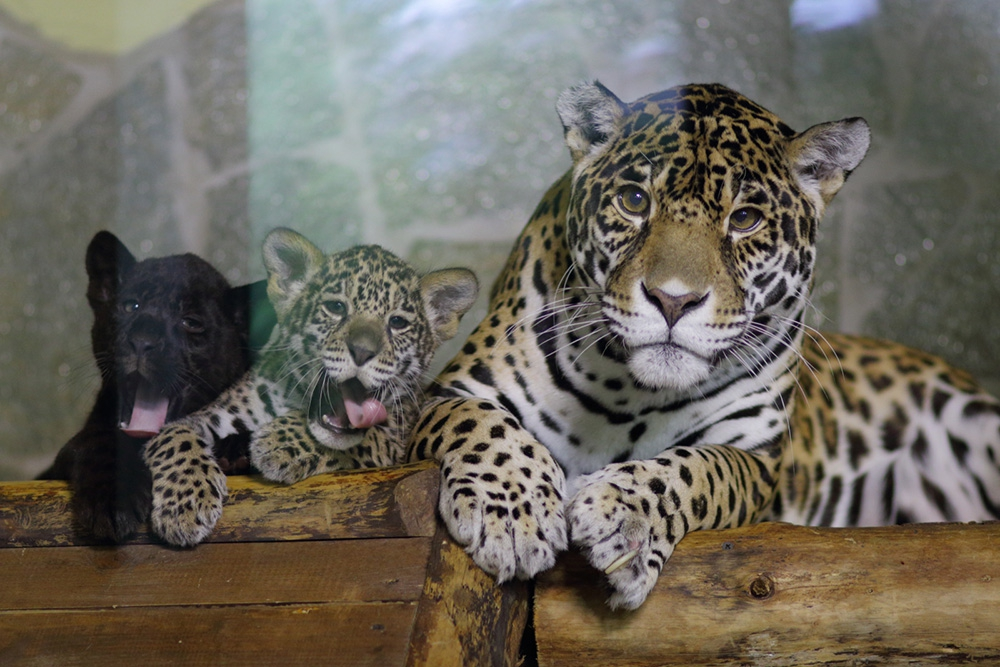
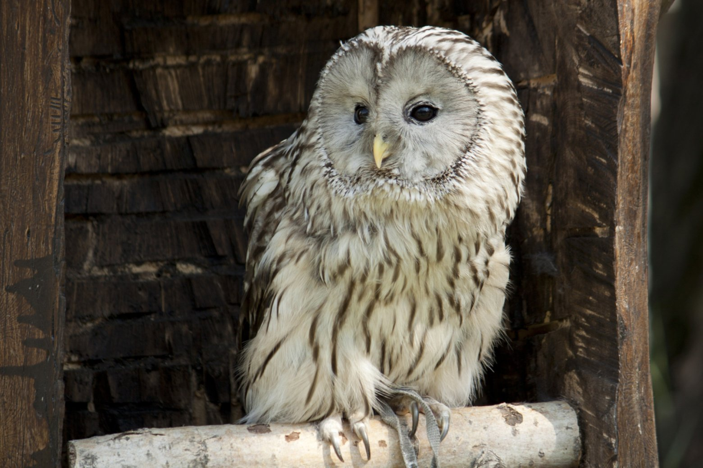
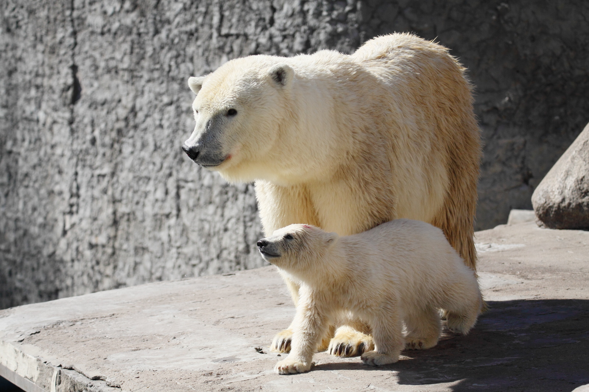
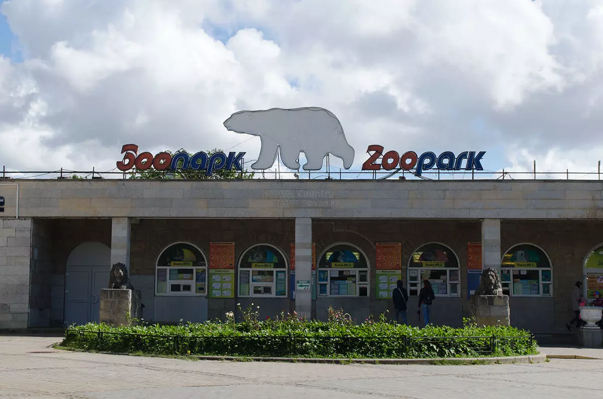

Добро пожаловать на сайт!
На сайте представлена информация о ленинградском зоопарке.
Ленинградский зоологический парк — один из старейших зоопарков России и один из самых северных зоопарков мира. Основан 2 (14) августа 1865.
Зоопарк расположен в историческом центре Санкт-Петербурга в Петроградском районе по адресу: 197198, Санкт-Петербург, Александровский парк, д. 1. Вход со стороны Кронверкского проспекта.
ТРАНСПОРТ:
метро: «Горьковская»
метро: «Спортивная»
трамвай № 6, 40 до остановки «Зверинская улица» или «Введенская улица»
ЧАСЫ РАБОТЫ
Ежедневно: с 10:00 до 20:00
Внимание! Кассы закрываются на час раньше – в 19:00.
Жители зоопарка



